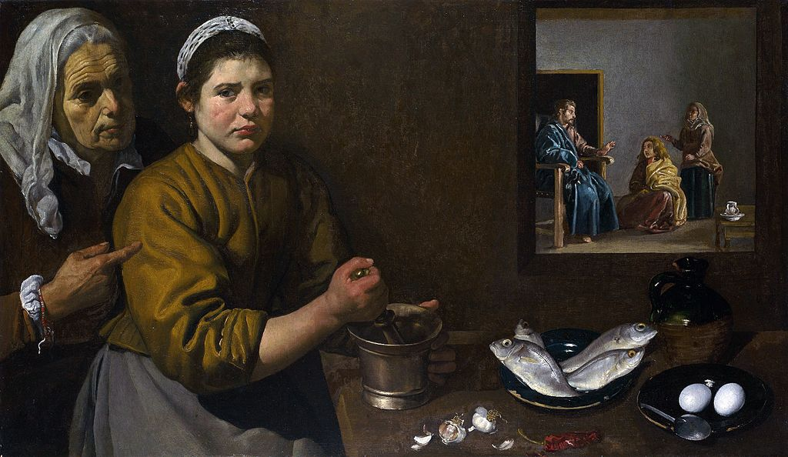

<head>
<meta charset="UTF-8" />
<meta name="keywords" content="drawing, painting" />
<meta name="description" content="drawings by Sunjy" />
<title>Sunjy</title>
<link rel="shortcut icon" type="image/x-icon" href="../../mImages/mCommon/favicon.ico" media="screen" />
<link rel="stylesheet" type="text/css" href="../../mCsses/mCommon/mCssA.css" />
<link rel="stylesheet" type="text/css" href="../../mCsses/mCommon/mCssB.css" />
<link rel="stylesheet" type="text/css" href="../../mCsses/mCommon/mCssC.css" />
<link rel="stylesheet" type="text/css" href="../../mCsses/mCommon/mCssD.css" />
<link rel="stylesheet" type="text/css" href="../../mCsses/mContent/mCssA.css" />
<link rel="stylesheet" type="text/css" href="../../mCsses/mContent/mCssB.css" />
<link rel="stylesheet" type="text/css" href="../../mCsses/mContent/mCssC.css" />
<link rel="stylesheet" type="text/css" href="../../mCsses/mContent/mCssD.css" />
</head>
<script type="text/javascript" src="../../mScripts/mContent/mContentAA.js" /></script>
<script type="text/javascript" src="../../mScripts/mContent/mContentAB.js" /></script>
<script type="text/javascript" src="../../mScripts/mContent/mContentAC.js" /></script>
<script type="text/javascript" src="../../mScripts/mContent/mContentAD.js" /></script>
<script type="text/javascript"></script> 
<script type="text/javascript">
document.write('<div class="mImgAbsolute"></div>');
/*
document.write('<p class="mFontSizeBColor" />From a white paper...</p>');
document.write('<table class="center"><tr><td>');
document.write('');
document.write('</td></tr></table>');
*/
</script>


<script type="text/javascript">
document.write('<p class="mFontSizeBColor" />Christ in the House of Martha and Mary</p>');
document.write('<p class="mFontSizeSColor" />“Kitchen Scene with Christ in the House of Martha and Mary” by Diego Velázquez depicts the interior of a kitchen with two women in the foreground, and the background is a biblical scene.<br><br>The religious scene shows the story of Martha and Mary, according to the Gospel of Luke 10:38–42.<br><br>In the kitchen, the older woman on the left is directing the younger girl in the preparation of a meal. On the table are several foods, including fish, eggs, and garlic. Perhaps the ingredients of aioli with a garlic mayonnaise made to accompany fish.<br><br>In the story of Martha and Mary, Christ goes to the house of a woman named Martha. Her sister, Mary, sat at his feet and listened to him speak.<br><br>Martha, on the other hand, went to “make all the preparations that had to be made.” Upset that Mary did not help her, she complained to Christ, and he responded with:<br><br>“Martha, Martha, … you are worried and upset about many things,<br> but only one thing is needed.<br> Mary has chosen what is better,<br> and it will not be taken away from her.”<br><br>In the painting, Christ is shown as a bearded man in a blue tunic. He gestures at Martha, the woman standing behind Mary, rebuking her in her frustration.<br><br>What made Velázquez’s paintings of this genre unique is the way he created ambiguity.<br><br>Is this scene a painting on the wall? Or a representation of the thoughts of the kitchen maid in the foreground? Or an actual incident which is seen through a window?<br><br>Bodegón Art<br><br>This painting by Diego Velázquez dates to his Seville period, it was painted in 1618, shortly after he completed his apprenticeship.<br><br>At this time, Velázquez was experimenting with “Bodegon” settings. This form of genre painting was set in taverns or kitchens which was frequently used to relate scenes of contemporary Spain to themes and stories from the Bible.<br><br>This genre contained depictions of people working in the preparation of food and drink. In Velázquez’s art, the people were extraordinarily realistic. <br><br>They were probably painted from his household or acquaintances as they appear in other paintings by Velázquez’s from the same time in the “bodegon” genre.<br><br>The term “bodega” in Spanish can mean “pantry,” “tavern,” or “wine cellar.”<br></p>');
document.write('<table class="center" /><tr><td>');
document.write('<br>The religious scene shows the story of Martha and Mary, according to the Gospel of Luke 10:38–42.<br><br>In the kitchen, the older woman on the left is directing the younger girl in the preparation of a meal. On the table are several foods, including fish, eggs, and garlic. Perhaps the ingredients of aioli with a garlic mayonnaise made to accompany fish.<br><br>In the story of Martha and Mary, Christ goes to the house of a woman named Martha. Her sister, Mary, sat at his feet and listened to him speak.<br><br>Martha, on the other hand, went to “make all the preparations that had to be made.” Upset that Mary did not help her, she complained to Christ, and he responded with:<br><br>“Martha, Martha, … you are worried and upset about many things,<br> but only one thing is needed.<br> Mary has chosen what is better,<br> and it will not be taken away from her.”<br><br>In the painting, Christ is shown as a bearded man in a blue tunic. He gestures at Martha, the woman standing behind Mary, rebuking her in her frustration.<br><br>What made Velázquez’s paintings of this genre unique is the way he created ambiguity.<br><br>Is this scene a painting on the wall? Or a representation of the thoughts of the kitchen maid in the foreground? Or an actual incident which is seen through a window?<br><br>Bodegón Art<br><br>This painting by Diego Velázquez dates to his Seville period, it was painted in 1618, shortly after he completed his apprenticeship.<br><br>At this time, Velázquez was experimenting with “Bodegon” settings. This form of genre painting was set in taverns or kitchens which was frequently used to relate scenes of contemporary Spain to themes and stories from the Bible.<br><br>This genre contained depictions of people working in the preparation of food and drink. In Velázquez’s art, the people were extraordinarily realistic. <br><br>They were probably painted from his household or acquaintances as they appear in other paintings by Velázquez’s from the same time in the “bodegon” genre.<br><br>The term “bodega” in Spanish can mean “pantry,” “tavern,” or “wine cellar.”<br>" />');
document.write('</td></tr></table>');
</script>


